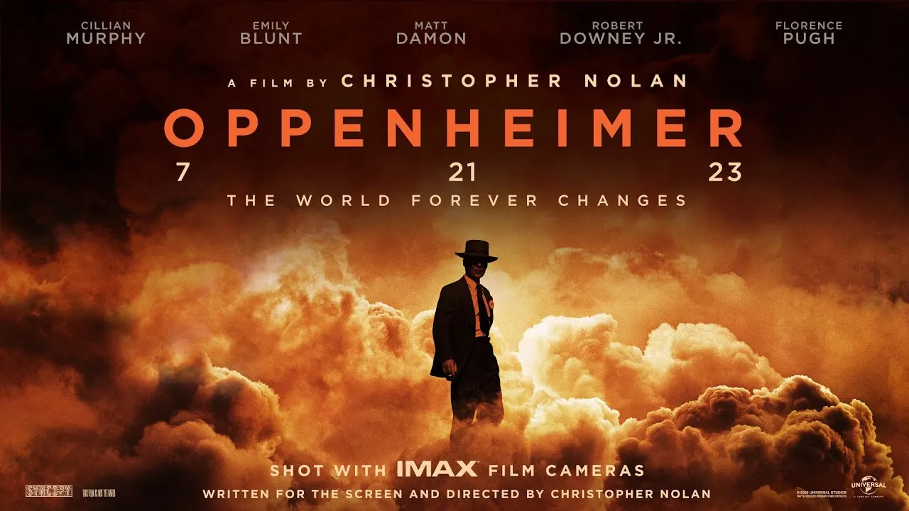

Jogos MOBA
Os jogos MOBA (Multiplayer Online Battle Arena) têm conquistado uma enorme popularidade na indústria de jogos nos últimos anos. Eles envolvem equipes de jogadores competindo em batalhas estratégicas, combinando elementos de jogos de estratégia em tempo real e RPG. Aqui está uma visão geral da história, competitividade e alguns dados sobre jogos MOBA.
História:
O gênero MOBA teve suas origens em mods de jogos anteriores. O primeiro MOBA amplamente reconhecido foi "Defense of the Ancients" (DotA), um mod para o jogo "Warcraft III" da Blizzard Entertainment lançado em 2003. O sucesso do DotA inspirou o desenvolvimento de jogos MOBA independentes.
Em 2009, a Riot Games lançou "League of Legends" (LoL), que se tornou um dos jogos MOBA mais populares de todos os tempos. O jogo apresentou uma experiência acessível e atraente, impulsionando o crescimento do gênero MOBA como um todo.
Competitividade:
Os jogos MOBA têm uma cena competitiva muito ativa e são um dos principais pilares dos eSports. Equipes profissionais e jogadores individuais competem em ligas e torneios em todo o mundo, batalhando pela supremacia e por prêmios em dinheiro significativos.
O jogo "League of Legends" é um exemplo proeminente de um MOBA com uma cena competitiva estabelecida. A
Riot
Games organiza o "League of Legends World Championship", um torneio anual que atrai milhões de
espectadores
e distribui milhões de dólares em premiações. Além disso, existem várias ligas regionais e torneios
independentes que mantêm a comunidade competitiva ativa.

Outro MOBA popular é "Dota 2", desenvolvido pela Valve Corporation. O jogo tem sua própria competição
de
eSports, o "The International", que é conhecido por ter premiações astronômicas. Os jogadores
profissionais
de Dota 2 competem por prêmios em dinheiro que chegam a milhões de dólares.
Dados de jogos MOBA:
Os jogos MOBA atraem uma base de fãs enorme e têm uma presença significativa nos eSports. Aqui estão alguns dados interessantes sobre jogos MOBA:
League of Legends
É um dos jogos mais jogados e assistidos atualmente. Durante o pico de sua popularidade, o jogo alcançou mais de 100 milhões de jogadores mensais.
Dota 2
O "The International 2019" estabeleceu o recorde de maior prêmio em dinheiro na história dos eSports, distribuindo mais de US$ 34 milhões.
Heroes of the Storm
Outro jogo MOBA, da Blizzard Entertainment e "Smite" da Hi-Rez Studios, também têm comunidades competitivas ativas e realizam torneios regulares.
Os jogos MOBA são conhecidos por sua complexidade estratégica, ampla variedade de personagens jogáveis e a necessidade de uma forte coordenação em equipe. Além dos jogos MOBA clássicos, existem também variações do gênero, como "Arena of Valor", "Mobile Legends" e "Vainglory", que foram projetados especificamente para jogabilidade em dispositivos móveis. Esses são apenas alguns dados gerais sobre a história, competitividade e informações sobre jogos MOBA. O gênero continua a evoluir, atraindo jogadores de todo o mundo e fornecendo experiências competitivas emocionantes e estratégicas.